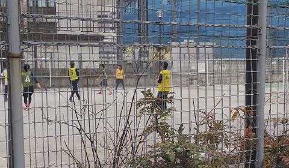

2020年の個サル

去年の11月に初めて行った個サル。
会場は高田馬場駅近くの公園。
一番の特徴は、初参加が300円で2回目以降は200円と参加費が安い事だ！

友人の誘いで訪れた印刷工場跡で見た階段はところどころ腐食が進んでおり、歩みを進めるたびにそう長くないであろう踏み板の寿命を感じさせる。
こういった場所に来るたびに懐かしい感覚を覚えてしまうのはなぜだろう。手すりを掴んだ左手から香る酸化鉄は、逆上がりができずに半べそをかいていた時分を思い出させた。

長めに取った夏季休暇もいよいよ終わりに近づく某日、せっかく軽井沢に来ているのだからと、少し足を伸ばして翡翠峠に訪れた。
眼前に広がる一本道は、トンネルを抜けて感じた温度差も相まっていっそう胃のあたりをざわつかせる。
長らく手入れされていないであろう道だが、思った以上に歩みを阻む草が少ない理由に想像を巡らせ、一人笑みが溢れる。
年を取るにつれ失うものは多くあれど、廃線を歩くという高揚感は、皆いくつになっても消えないらしい。